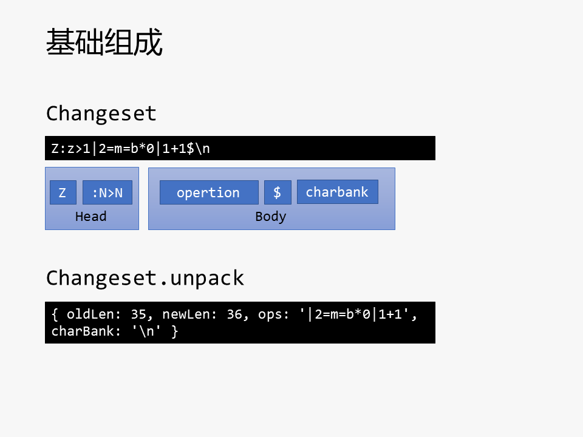
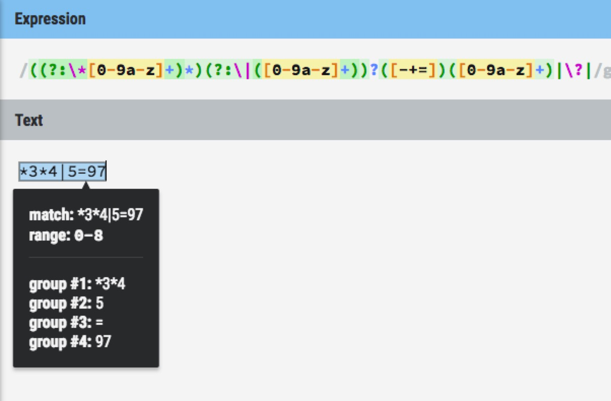

<!DOCTYPE html>
<html>
<head>
    <meta charset="utf-8" />

    

    
    <title>etherpad 技术分析 | 有幸的个人小站</title>
    
    <meta name="viewport" content="width=device-width, initial-scale=1, maximum-scale=1">
    
        <meta name="keywords" content="EtherPad" />
    
    <meta name="description" content="Etherpad 技术分析领域模型12345678910111213141516171819202122232425262728293031323334353637383940414243444546474849class Pad &amp;#123;    head    atext    apool&amp;#125;class PadRevision &amp;#123;    author    revisio">
<meta name="keywords" content="EtherPad">
<meta property="og:type" content="article">
<meta property="og:title" content="etherpad 技术分析">
<meta property="og:url" content="http://xiaoqinghua.site/etherpad技术分析.html">
<meta property="og:site_name" content="有幸的个人小站">
<meta property="og:description" content="Etherpad 技术分析领域模型12345678910111213141516171819202122232425262728293031323334353637383940414243444546474849class Pad &amp;#123;    head    atext    apool&amp;#125;class PadRevision &amp;#123;    author    revisio">
<meta property="og:locale" content="en">
<meta property="og:image" content="https://cdn-images-1.medium.com/max/2000/1*2LY_j978yJuPanf2ZrYuWg.png">
<meta property="og:updated_time" content="2018-08-24T07:43:43.135Z">
<meta name="twitter:card" content="summary">
<meta name="twitter:title" content="etherpad 技术分析">
<meta name="twitter:description" content="Etherpad 技术分析领域模型12345678910111213141516171819202122232425262728293031323334353637383940414243444546474849class Pad &amp;#123;    head    atext    apool&amp;#125;class PadRevision &amp;#123;    author    revisio">
<meta name="twitter:image" content="https://cdn-images-1.medium.com/max/2000/1*2LY_j978yJuPanf2ZrYuWg.png">
    

    
        <link rel="alternate" href="/" title="有幸的个人小站" type="application/atom+xml" />
    

    
        <link rel="icon" href="/css/images/favicon.ico" />
    

    <link rel="stylesheet" href="/libs/font-awesome/css/font-awesome.min.css">
    <link rel="stylesheet" href="/libs/titillium-web/styles.css">
    <link rel="stylesheet" href="/libs/source-code-pro/styles.css">

    <link rel="stylesheet" href="/css/style.css">

    <script src="/libs/jquery/3.3.1/jquery.min.js"></script>
    
    
        <link rel="stylesheet" href="/libs/lightgallery/css/lightgallery.min.css">
    
    
        <link rel="stylesheet" href="/libs/justified-gallery/justifiedGallery.min.css">
    
    
    
        <script>
var _hmt = _hmt || [];
(function() {
  var hm = document.createElement("script");
  hm.src = "//hm.baidu.com/hm.js?406f7b4a3caadab9aabc8241063812a6";
  var s = document.getElementsByTagName("script")[0];
  s.parentNode.insertBefore(hm, s);
})();
</script>

    


</head>

<body>
    <div id="wrap">
        <header id="header">
    <div id="header-outer" class="outer">
        <div class="container">
            <div class="container-inner">
                <div id="header-title">
                    <h1 class="logo-wrap">
                        <a href="/" class="logo"></a>
                    </h1>
                    
                        <h2 class="subtitle-wrap">
                            <p class="subtitle">code is poetry</p>
                        </h2>
                    
                </div>
                <div id="header-inner" class="nav-container">
                    <a id="main-nav-toggle" class="nav-icon fa fa-bars"></a>
                    <div class="nav-container-inner">
                        <ul id="main-nav">
                            
                                <li class="main-nav-list-item" >
                                    <a class="main-nav-list-link" href="/">Home</a>
                                </li>
                            
                                <li class="main-nav-list-item" >
                                    <a class="main-nav-list-link" href="/tags/Life">Life</a>
                                </li>
                            
                                <li class="main-nav-list-item" >
                                    <a class="main-nav-list-link" href="/tags/City">City</a>
                                </li>
                            
                                        <ul class="main-nav-list"><li class="main-nav-list-item"><a class="main-nav-list-link" href="/categories/Code/">Code</a><ul class="main-nav-list-child"><li class="main-nav-list-item"><a class="main-nav-list-link" href="/categories/Code/Cloud-Office/">Cloud-Office</a></li><li class="main-nav-list-item"><a class="main-nav-list-link" href="/categories/Code/EtherPad/">EtherPad</a></li><li class="main-nav-list-item"><a class="main-nav-list-link" href="/categories/Code/Iterm2/">Iterm2</a></li><li class="main-nav-list-item"><a class="main-nav-list-link" href="/categories/Code/Java-Fundamental/">Java-Fundamental</a></li><li class="main-nav-list-item"><a class="main-nav-list-link" href="/categories/Code/MySql/">MySql</a></li><li class="main-nav-list-item"><a class="main-nav-list-link" href="/categories/Code/OT/">OT</a></li><li class="main-nav-list-item"><a class="main-nav-list-link" href="/categories/Code/Redis/">Redis</a></li><li class="main-nav-list-item"><a class="main-nav-list-link" href="/categories/Code/Vim/">Vim</a></li></ul></li></ul>
                                    
                        </ul>
                        <nav id="sub-nav">
                            <div id="search-form-wrap">

    <form class="search-form">
        <input type="text" class="ins-search-input search-form-input" placeholder="Search" />
        <button type="submit" class="search-form-submit"></button>
    </form>
    <div class="ins-search">
    <div class="ins-search-mask"></div>
    <div class="ins-search-container">
        <div class="ins-input-wrapper">
            <input type="text" class="ins-search-input" placeholder="Type something..." />
            <span class="ins-close ins-selectable"><i class="fa fa-times-circle"></i></span>
        </div>
        <div class="ins-section-wrapper">
            <div class="ins-section-container"></div>
        </div>
    </div>
</div>
<script>
(function (window) {
    var INSIGHT_CONFIG = {
        TRANSLATION: {
            POSTS: 'Posts',
            PAGES: 'Pages',
            CATEGORIES: 'Categories',
            TAGS: 'Tags',
            UNTITLED: '(Untitled)',
        },
        ROOT_URL: '/',
        CONTENT_URL: '/content.json',
    };
    window.INSIGHT_CONFIG = INSIGHT_CONFIG;
})(window);
</script>
<script src="/js/insight.js"></script>

</div>
                        </nav>
                    </div>
                </div>
            </div>
        </div>
    </div>
</header>

        <div class="container">
            <div class="main-body container-inner">
                <div class="main-body-inner">
                    <section id="main">
                        <div class="main-body-header">
    <h1 class="header">
    
    <a class="page-title-link" href="/categories/Code/">Code</a><i class="icon fa fa-angle-right"></i><a class="page-title-link" href="/categories/Code/EtherPad/">EtherPad</a>
    </h1>
</div>
                        <div class="main-body-content">
                            <article id="post-etherpad技术分析" class="article article-single article-type-post" itemscope itemprop="blogPost">
    <div class="article-inner">
        
            <header class="article-header">
                
    
        <h1 class="article-title" itemprop="name">
        etherpad 技术分析
        </h1>
    

            </header>
        
        
            <div class="article-meta">
                
    <div class="article-date">
        <a href="/etherpad技术分析.html" class="article-date">
            <time datetime="2018-06-19T07:07:54.000Z" itemprop="datePublished">2018-06-19</time>
        </a>
    </div>

                
    <div class="article-tag">
        <i class="fa fa-tag"></i>
        <a class="tag-link" href="/tags/EtherPad/">EtherPad</a>
    </div>

            </div>
        
        
        <div class="article-entry" itemprop="articleBody">
            <h1 id="Etherpad-技术分析"><a href="#Etherpad-技术分析" class="headerlink" title="Etherpad 技术分析"></a>Etherpad 技术分析</h1><h2 id="领域模型"><a href="#领域模型" class="headerlink" title="领域模型"></a>领域模型</h2><figure class="highlight plain"><table><tr><td class="gutter"><pre><span class="line">1</span><br><span class="line">2</span><br><span class="line">3</span><br><span class="line">4</span><br><span class="line">5</span><br><span class="line">6</span><br><span class="line">7</span><br><span class="line">8</span><br><span class="line">9</span><br><span class="line">10</span><br><span class="line">11</span><br><span class="line">12</span><br><span class="line">13</span><br><span class="line">14</span><br><span class="line">15</span><br><span class="line">16</span><br><span class="line">17</span><br><span class="line">18</span><br><span class="line">19</span><br><span class="line">20</span><br><span class="line">21</span><br><span class="line">22</span><br><span class="line">23</span><br><span class="line">24</span><br><span class="line">25</span><br><span class="line">26</span><br><span class="line">27</span><br><span class="line">28</span><br><span class="line">29</span><br><span class="line">30</span><br><span class="line">31</span><br><span class="line">32</span><br><span class="line">33</span><br><span class="line">34</span><br><span class="line">35</span><br><span class="line">36</span><br><span class="line">37</span><br><span class="line">38</span><br><span class="line">39</span><br><span class="line">40</span><br><span class="line">41</span><br><span class="line">42</span><br><span class="line">43</span><br><span class="line">44</span><br><span class="line">45</span><br><span class="line">46</span><br><span class="line">47</span><br><span class="line">48</span><br><span class="line">49</span><br></pre></td><td class="code"><pre><span class="line">class Pad &#123;</span><br><span class="line">    head</span><br><span class="line">    atext</span><br><span class="line">    apool</span><br><span class="line">&#125;</span><br><span class="line"></span><br><span class="line">class PadRevision &#123;</span><br><span class="line">    author</span><br><span class="line">    revision</span><br><span class="line">    changeset</span><br><span class="line">    timestamp</span><br><span class="line">&#125;</span><br><span class="line"></span><br><span class="line">class Changeset &#123;</span><br><span class="line">    oldLength</span><br><span class="line">    newLength</span><br><span class="line">    ops</span><br><span class="line">    charBank</span><br><span class="line">&#125;</span><br><span class="line"></span><br><span class="line">class Op &#123;</span><br><span class="line">    opcode</span><br><span class="line">    lines</span><br><span class="line">    chars</span><br><span class="line">    attribs</span><br><span class="line">&#125;</span><br><span class="line"></span><br><span class="line">class AText &#123;</span><br><span class="line">    text</span><br><span class="line">    attribs</span><br><span class="line">&#125;</span><br><span class="line"></span><br><span class="line">class AttributePool &#123;</span><br><span class="line">    nextNum</span><br><span class="line">    numToAttrib</span><br><span class="line">    attribToNum</span><br><span class="line">&#125;</span><br><span class="line"></span><br><span class="line">class Attribute &#123;</span><br><span class="line">    key</span><br><span class="line">    value</span><br><span class="line">&#125;</span><br><span class="line"></span><br><span class="line">Pad o---&gt; PadRevision</span><br><span class="line">Pad o---&gt; AText</span><br><span class="line">Pad o---&gt; AttributePool</span><br><span class="line">PadRevision o--&gt; Changeset</span><br><span class="line">Changeset o--&gt; Op</span><br><span class="line">AttributePool o..&gt; Attribute</span><br></pre></td></tr></table></figure>
<h3 id="Pad"><a href="#Pad" class="headerlink" title="Pad"></a>Pad</h3><p>pad 在 etherpad 中对应一篇文档，是多人协作的基本单位。</p>
<p>对 pad 的每一次编辑操作，都会生成一个 revision, 类似于版本控制系统(尤其类似于 svn)中的一次提交，revision 从零开始往上递增，<code>head</code> 指向当前最新的 <code>revision</code>。对所有的 revision 依次计算，可以得出 pad 的正文，但是对于有大量编辑操作的 pad, 打开 pad 时大量的计算势必影响加载速度，所以 pad 中包含 <code>atext</code> 字段表示当前的内容，以空间换时间。atext 包含两部分： <code>text</code> 和 <code>attribs</code>, text 就是该文档的正文，attribs 是描述正文的内容都有哪些属性。</p>
<p><code>apool</code> 是属性 “池”，记录了<code>属性编号</code>对应的<code>属性</code>。</p>
<h3 id="AText"><a href="#AText" class="headerlink" title="AText"></a>AText</h3><p>Atext 示例数据：</p>
<figure class="highlight json"><table><tr><td class="gutter"><pre><span class="line">1</span><br><span class="line">2</span><br><span class="line">3</span><br><span class="line">4</span><br></pre></td><td class="code"><pre><span class="line">&#123;</span><br><span class="line">  <span class="attr">"text"</span>: <span class="string">"Welcome to Etherpad!\n\nThis pad text is synchronized as you type, so that everyone viewing this page sees the same text. This allows you to collaborate seamlessly on documents!\n\nGet involved with Etherpad at http://etherpad.org\n\nsdf\n\ns\nsdf\nsefssss\n\nsss\nsdf\nsss\n\nsefffsdfsssef\nesssdfsd\ns\nsdfsdfsd\n\ncvb\nsdfsdf\n\naaaaaaaaaaaaaaaaa第三方斯蒂芬\n\nsdf\n\nsdsssdf\n\nabc\n\nabccccfbcfcvbcfgrddfgddddd\n\nsdfesfsges\n\nsdfdsses\n\nsseg\n\n\nsdfesgessdf\n\n\n\nsdfessefgdfg\n"</span>,</span><br><span class="line">  <span class="attr">"attribs"</span>: <span class="string">"|2+m+1o*4+7|2+2g*3+1d*0|5+9*1+3*0|1+1*0+7|1+1*1|1+1*0+3*1|2+5*0+3*1|2+2*0+5*2+8*1|2+a*2+1*1|3+b*2+3*1|3+9*1+n*2|3+6*0|5+f*0+3*2+b*0|1+d*2|1+1*0+a*2|2+2*2+5*0+3*2|2+2*0+4*2|1+1*0|2+2*0+7*2|4+8*2+7*0+5|1+1"</span></span><br><span class="line">&#125;</span><br></pre></td></tr></table></figure>
<h3 id="AttributePool"><a href="#AttributePool" class="headerlink" title="AttributePool"></a>AttributePool</h3><p>AttributePoolJson 是 AttributePool 保存到数据库中的形式，加载到内存时会做一次转换。 AttributePool 多了一个 Attribute -&gt; num 的反向索引，用于快速的通过 Attribute 找到对应的编号。</p>
<p>etherpad 的设计中， AttributePool 的属于某个 <code>pad</code> 的 “命名空间” 的， 也就是说，每个 pad 都会有自己的 AttributePool。</p>
<p>AttributePoolJson 示例数据：</p>
<figure class="highlight json"><table><tr><td class="gutter"><pre><span class="line">1</span><br><span class="line">2</span><br><span class="line">3</span><br><span class="line">4</span><br><span class="line">5</span><br><span class="line">6</span><br><span class="line">7</span><br><span class="line">8</span><br><span class="line">9</span><br><span class="line">10</span><br><span class="line">11</span><br><span class="line">12</span><br><span class="line">13</span><br><span class="line">14</span><br><span class="line">15</span><br><span class="line">16</span><br><span class="line">17</span><br><span class="line">18</span><br><span class="line">19</span><br><span class="line">20</span><br><span class="line">21</span><br><span class="line">22</span><br><span class="line">23</span><br><span class="line">24</span><br><span class="line">25</span><br></pre></td><td class="code"><pre><span class="line">&#123;</span><br><span class="line">  <span class="attr">"numToAttrib"</span>: &#123;</span><br><span class="line">    <span class="attr">"0"</span>: [</span><br><span class="line">      <span class="string">"author"</span>,</span><br><span class="line">      <span class="string">"a.lbCJXik3gn5kFmZn"</span></span><br><span class="line">    ],</span><br><span class="line">    <span class="attr">"1"</span>: [</span><br><span class="line">      <span class="string">"author"</span>,</span><br><span class="line">      <span class="string">"a.QOApinD3T5GQ57t6"</span></span><br><span class="line">    ],</span><br><span class="line">    <span class="attr">"2"</span>: [</span><br><span class="line">      <span class="string">"author"</span>,</span><br><span class="line">      <span class="string">"a.EAPXEvFdNybN83aD"</span></span><br><span class="line">    ],</span><br><span class="line">    <span class="attr">"3"</span>: [</span><br><span class="line">      <span class="string">"strikethrough"</span>,</span><br><span class="line">      <span class="string">"true"</span></span><br><span class="line">    ],</span><br><span class="line">    <span class="attr">"4"</span>: [</span><br><span class="line">      <span class="string">"bold"</span>,</span><br><span class="line">      <span class="string">"true"</span></span><br><span class="line">    ]</span><br><span class="line">  &#125;,</span><br><span class="line">  <span class="attr">"nextNum"</span>: <span class="number">5</span></span><br><span class="line">&#125;</span><br></pre></td></tr></table></figure>
<h3 id="PadRevision"><a href="#PadRevision" class="headerlink" title="PadRevision"></a>PadRevision</h3><p>每个 revision 都记录了 <code>author</code> 和 <code>timestamp</code>, 因此可以回到任意的历史编辑状态。</p>
<p>revision 的主要内容是 <code>changeset</code>.</p>
<h3 id="Changeset"><a href="#Changeset" class="headerlink" title="Changeset"></a>Changeset</h3><p>一个 <code>changeset</code> 代表对文档的变更。 changeset 的结构:</p>
<p></p>
<p>图片来源: <a href="http://slix.rocks/%E5%9C%A8%E7%BA%BF%E6%96%87%E6%A1%A3%E4%B8%AD-easysync2-%E7%AE%97%E6%B3%95%E4%BB%8B%E7%BB%8D/" target="_blank" rel="noopener">http://slix.rocks/%E5%9C%A8%E7%BA%BF%E6%96%87%E6%A1%A3%E4%B8%AD-easysync2-%E7%AE%97%E6%B3%95%E4%BB%8B%E7%BB%8D/</a></p>
<h3 id="Op"><a href="#Op" class="headerlink" title="Op"></a>Op</h3><p>etherpad 共有四种操作：</p>
<figure class="highlight plain"><table><tr><td class="gutter"><pre><span class="line">1</span><br><span class="line">2</span><br><span class="line">3</span><br><span class="line">4</span><br></pre></td><td class="code"><pre><span class="line">*N: 应用某个属性</span><br><span class="line">=N: 保留 N 个字符</span><br><span class="line">+N: 增加 N 个字符</span><br><span class="line">-N: 删除 N 个字符</span><br></pre></td></tr></table></figure>
<p></p>
<p><a href="https://regexr.com/3r6ke" target="_blank" rel="noopener">在线 demo</a>。</p>
<h3 id="etherpad-的-OT-实现"><a href="#etherpad-的-OT-实现" class="headerlink" title="etherpad 的 OT 实现"></a>etherpad 的 OT 实现</h3><p>实时协同编辑的核心算法是 OT，而 Etherpad 中 OT 的实现是一个名为 <code>follow</code> 的函数。</p>
<p>详见 <a href="./follow-alg.key">follow 算法</a>。</p>
<h2 id="client-server-协议"><a href="#client-server-协议" class="headerlink" title="client  server 协议"></a>client <-> server 协议</-></h2><h3 id="长连接"><a href="#长连接" class="headerlink" title="长连接"></a>长连接</h3><p>etherpad 使用开源 SocketIO 库，这个库在浏览器支持 <code>websocket</code> 时，会使用 <code>websocket</code>, 在老旧的浏览器中会 fallback 到 long polling 上。</p>
<p>SocketIO 也有不少批评的声音，例如: <a href="https://github.com/rethinkdb/horizon/issues/413" target="_blank" rel="noopener">https://github.com/rethinkdb/horizon/issues/413</a> 。</p>
<p>考虑到目前主流的浏览器都已经支持 <code>websocket</code> 了，可以考虑用原生 <code>websocket</code>, 如果必须支持老旧浏览器，则可以考虑 <code>sockjs</code>(onlyoffice 好像用的这个)。</p>
<h3 id="服务端逻辑"><a href="#服务端逻辑" class="headerlink" title="服务端逻辑"></a>服务端逻辑</h3><p>多人编辑是一定会出现冲突的，通过两个办法解决冲突:</p>
<ol>
<li>服务端通过排队的方式，把并发修改的的操作串行化；</li>
<li>如果某次修改的 baseRev 不是当前 pad 的 head, 则通过 OT 算法对于已经 <code>commit</code> 的修改依次计算，这个过程有点类似于 git 的 <code>rebase</code>。</li>
</ol>
<figure class="highlight plain"><table><tr><td class="gutter"><pre><span class="line">1</span><br><span class="line">2</span><br><span class="line">3</span><br><span class="line">4</span><br><span class="line">5</span><br><span class="line">6</span><br><span class="line">7</span><br><span class="line">8</span><br><span class="line">9</span><br><span class="line">10</span><br><span class="line">11</span><br><span class="line">12</span><br><span class="line">13</span><br><span class="line">14</span><br><span class="line">15</span><br><span class="line">16</span><br><span class="line">17</span><br><span class="line">18</span><br><span class="line">19</span><br><span class="line">20</span><br><span class="line">21</span><br><span class="line">22</span><br><span class="line">23</span><br><span class="line">24</span><br><span class="line">25</span><br><span class="line">26</span><br><span class="line">27</span><br><span class="line">28</span><br><span class="line">29</span><br></pre></td><td class="code"><pre><span class="line">autonumber</span><br><span class="line">skinparam ParticipantPadding 90</span><br><span class="line">title 服务端处理流程\n\n</span><br><span class="line"></span><br><span class="line">Client -&gt; Server: baseRev + CS</span><br><span class="line"></span><br><span class="line">Server -&gt; Server: enqueue baseRev + CS</span><br><span class="line"></span><br><span class="line">|||</span><br><span class="line"></span><br><span class="line">loop</span><br><span class="line">Server -&gt; Server: follow</span><br><span class="line">note left</span><br><span class="line">while (baseRev &lt; head) &#123;</span><br><span class="line">    CS = follow(R(baseRev), CS);</span><br><span class="line">    baseRev++;</span><br><span class="line">&#125;</span><br><span class="line">end note</span><br><span class="line">end</span><br><span class="line"></span><br><span class="line">|||</span><br><span class="line"></span><br><span class="line">Server -&gt; Server: save revision</span><br><span class="line"></span><br><span class="line">Server -&gt; Client: accept commit</span><br><span class="line"></span><br><span class="line">|||</span><br><span class="line"></span><br><span class="line">Server -&gt; &quot;Other clients&quot;: CS(head + 1)</span><br></pre></td></tr></table></figure>
<h3 id="客户端逻辑"><a href="#客户端逻辑" class="headerlink" title="客户端逻辑"></a>客户端逻辑</h3><ol>
<li>将新的输入合并到本地变更</li>
</ol>
<blockquote>
<p>ace2_inner.js</p>
</blockquote>
<figure class="highlight javascript"><table><tr><td class="gutter"><pre><span class="line">1</span><br><span class="line">2</span><br></pre></td><td class="code"><pre><span class="line"><span class="keyword">var</span> editor = <span class="keyword">new</span> Ace2Inner()</span><br><span class="line">editor.init();</span><br></pre></td></tr></table></figure>
<blockquote>
<p>ace.js</p>
</blockquote>
<figure class="highlight javascript"><table><tr><td class="gutter"><pre><span class="line">1</span><br><span class="line">2</span><br><span class="line">3</span><br><span class="line">4</span><br><span class="line">5</span><br><span class="line">6</span><br><span class="line">7</span><br><span class="line">8</span><br><span class="line">9</span><br><span class="line">10</span><br><span class="line">11</span><br><span class="line">12</span><br><span class="line">13</span><br><span class="line">14</span><br><span class="line">15</span><br><span class="line">16</span><br><span class="line">17</span><br><span class="line">18</span><br></pre></td><td class="code"><pre><span class="line"></span><br><span class="line"><span class="number">1</span>、editor.init = <span class="function"><span class="keyword">function</span>(<span class="params">containerId, initialCode, doneFunc</span>)</span>&#123;&#125;</span><br><span class="line"></span><br><span class="line"><span class="number">2</span>、doActionsPendingInit()</span><br><span class="line"></span><br><span class="line"><span class="number">3</span>、aceFunctionsPendingInit.getFormattedCode</span><br><span class="line"></span><br><span class="line"><span class="number">4</span>、ace2_inner.js</span><br><span class="line"><span class="function"><span class="keyword">function</span> <span class="title">getFormattedCode</span>(<span class="params"></span>)</span>&#123;</span><br><span class="line">    inCallStackIfNecessary(<span class="string">"getFormattedCode"</span>, incorporateUserChanges);</span><br><span class="line">&#125;</span><br><span class="line"></span><br><span class="line"><span class="number">5</span>、<span class="function"><span class="keyword">function</span> <span class="title">observeSuspiciousNodes</span>(<span class="params"></span>)</span></span><br><span class="line"><span class="function"></span></span><br><span class="line"><span class="function">6、<span class="title">function</span> <span class="title">incorporateUserChanges</span>(<span class="params">isTimeUp</span>)</span></span><br><span class="line"><span class="function"></span></span><br><span class="line"><span class="function"><span class="title">fastIncorp</span>(<span class="params"></span>)</span></span><br><span class="line"><span class="function"><span class="title">inCallStackIfNecessary</span>(<span class="params"><span class="string">"handleKeyEvent"</span>, function(</span>)</span>&#123;&#125;</span><br></pre></td></tr></table></figure>
<ol start="2">
<li>向服务器提交变更集</li>
</ol>
<figure class="highlight javascript"><table><tr><td class="gutter"><pre><span class="line">1</span><br><span class="line">2</span><br><span class="line">3</span><br><span class="line">4</span><br><span class="line">5</span><br><span class="line">6</span><br><span class="line">7</span><br></pre></td><td class="code"><pre><span class="line"><span class="number">1</span>、collab_client.js</span><br><span class="line"></span><br><span class="line"><span class="number">2</span>、<span class="function"><span class="keyword">function</span> <span class="title">getCollabClient</span>(<span class="params">ace2editor, serverVars, initialUserInfo, options, _pad</span>)</span>&#123;&#125;</span><br><span class="line"></span><br><span class="line"><span class="number">3</span>、editor.setUserChangeNotificationCallback(wrapRecordingErrors(<span class="string">"handleUserChanges"</span>, handleUserChanges));</span><br><span class="line"></span><br><span class="line"><span class="number">4</span>、handleUserChanges()</span><br></pre></td></tr></table></figure>
<ol start="3">
<li><p>回复确认已提交的变更集(ack)</p>
</li>
<li><p>监听其他客户的变更集</p>
</li>
<li><p>连接到服务器并请求初始文档</p>
</li>
</ol>
<blockquote>
<p>pad.html</p>
</blockquote>
<figure class="highlight javascript"><table><tr><td class="gutter"><pre><span class="line">1</span><br></pre></td><td class="code"><pre><span class="line">&lt;script type=<span class="string">"text/javascript"</span>&gt; pad.init(); &lt;/script&gt;</span><br></pre></td></tr></table></figure>
<blockquote>
<p>pad.js</p>
</blockquote>
<figure class="highlight javascript"><table><tr><td class="gutter"><pre><span class="line">1</span><br><span class="line">2</span><br><span class="line">3</span><br><span class="line">4</span><br><span class="line">5</span><br><span class="line">6</span><br><span class="line">7</span><br><span class="line">8</span><br></pre></td><td class="code"><pre><span class="line"></span><br><span class="line"><span class="number">1</span>、init: <span class="function"><span class="keyword">function</span>(<span class="params"></span>)</span></span><br><span class="line"><span class="function"></span></span><br><span class="line"><span class="function">2、<span class="title">function</span> <span class="title">handshake</span>(<span class="params"></span>)</span></span><br><span class="line"><span class="function"></span></span><br><span class="line"><span class="function">3、<span class="title">socket</span>.<span class="title">once</span>(<span class="params"><span class="string">'connect'</span>, function (</span>) </span>&#123;</span><br><span class="line">    sendClientReady(<span class="literal">false</span>);</span><br><span class="line">  &#125;);</span><br></pre></td></tr></table></figure>
<figure class="highlight plain"><table><tr><td class="gutter"><pre><span class="line">1</span><br><span class="line">2</span><br><span class="line">3</span><br><span class="line">4</span><br><span class="line">5</span><br><span class="line">6</span><br><span class="line">7</span><br><span class="line">8</span><br><span class="line">9</span><br><span class="line">10</span><br><span class="line">11</span><br><span class="line">12</span><br><span class="line">13</span><br><span class="line">14</span><br><span class="line">15</span><br><span class="line">16</span><br><span class="line">17</span><br><span class="line">18</span><br><span class="line">19</span><br><span class="line">20</span><br><span class="line">21</span><br><span class="line">22</span><br><span class="line">23</span><br><span class="line">24</span><br><span class="line">25</span><br><span class="line">26</span><br><span class="line">27</span><br><span class="line">28</span><br><span class="line">29</span><br><span class="line">30</span><br><span class="line">31</span><br><span class="line">32</span><br><span class="line">33</span><br><span class="line">34</span><br><span class="line">35</span><br><span class="line">36</span><br><span class="line">37</span><br><span class="line">38</span><br><span class="line">39</span><br><span class="line">40</span><br><span class="line">41</span><br><span class="line">42</span><br><span class="line">43</span><br><span class="line">44</span><br><span class="line">45</span><br><span class="line">46</span><br><span class="line">47</span><br><span class="line">48</span><br><span class="line">49</span><br><span class="line">50</span><br><span class="line">51</span><br><span class="line">52</span><br><span class="line">53</span><br><span class="line">54</span><br><span class="line">55</span><br><span class="line">56</span><br><span class="line">57</span><br><span class="line">58</span><br><span class="line">59</span><br><span class="line">60</span><br><span class="line">61</span><br><span class="line">62</span><br><span class="line">63</span><br><span class="line">64</span><br><span class="line">65</span><br><span class="line">66</span><br><span class="line">67</span><br><span class="line">68</span><br><span class="line">69</span><br><span class="line">70</span><br><span class="line">71</span><br><span class="line">72</span><br><span class="line">73</span><br><span class="line">74</span><br><span class="line">75</span><br></pre></td><td class="code"><pre><span class="line"></span><br><span class="line">skinparam ParticipantPadding 90</span><br><span class="line">title 客户端处理流程\n\n</span><br><span class="line"></span><br><span class="line">|||</span><br><span class="line">|||</span><br><span class="line"></span><br><span class="line">Server &lt;- Client: first connect &lt;&lt; unique ID &gt;&gt;</span><br><span class="line">note right</span><br><span class="line">async.waterfall()</span><br><span class="line">end note</span><br><span class="line">note right of A #aqua</span><br><span class="line">收到服务器确认的变更状态</span><br><span class="line">end note</span><br><span class="line">note right of X #aqua</span><br><span class="line">把变更发到服务器时的状态</span><br><span class="line">end note</span><br><span class="line">note right of Y #aqua</span><br><span class="line">用户已输入的状态</span><br><span class="line">end note</span><br><span class="line">note right of E #aqua</span><br><span class="line">用户正在输入</span><br><span class="line">end note</span><br><span class="line"></span><br><span class="line">|||</span><br><span class="line"></span><br><span class="line">Client &lt;- Server: HEADTEXT</span><br><span class="line">|||</span><br><span class="line">note over Client , A</span><br><span class="line">identity mapping</span><br><span class="line">end note</span><br><span class="line"></span><br><span class="line">|||</span><br><span class="line"></span><br><span class="line">A &lt;-[#0000FF]- X: A=X*A</span><br><span class="line"></span><br><span class="line">|||</span><br><span class="line"></span><br><span class="line">X &lt;-[#0000FF]- Y:</span><br><span class="line">note right</span><br><span class="line">Y=Y*E</span><br><span class="line">end note</span><br><span class="line">|||</span><br><span class="line"></span><br><span class="line">Y &lt;-[#ED3EEE] E: types</span><br><span class="line"></span><br><span class="line">|||</span><br><span class="line">Y -[#0000FF]-&gt; Server: submit &lt;&lt; cs+uid &gt;&gt;</span><br><span class="line">|||</span><br><span class="line">note over A , Y</span><br><span class="line">every 500ms</span><br><span class="line">end note</span><br><span class="line">|||</span><br><span class="line"></span><br><span class="line">A &lt;-- Server: acknowledgement  </span><br><span class="line">|||</span><br><span class="line"></span><br><span class="line"></span><br><span class="line"></span><br><span class="line">&quot;Other clients&quot; &lt;-- Client : monitor other client</span><br><span class="line">|||</span><br><span class="line"></span><br><span class="line">&quot;Other clients&quot; --&gt; Server: other cs</span><br><span class="line"></span><br><span class="line">|||</span><br><span class="line"></span><br><span class="line">Client -&gt; Client: compose</span><br><span class="line">note left</span><br><span class="line">makeChangesetTracker()</span><br><span class="line">end note</span><br><span class="line">|||</span><br><span class="line"></span><br><span class="line">Server -&gt; Server: server logic</span><br><span class="line"></span><br><span class="line">|||</span><br></pre></td></tr></table></figure>
<h2 id="后续产品化工作"><a href="#后续产品化工作" class="headerlink" title="后续产品化工作"></a>后续产品化工作</h2><p></p>
<ul>
<li><p>长连接多机分布</p>
</li>
<li><p>数据库扩展</p>
</li>
<li><p>账户系统</p>
</li>
<li><p>运维自动化系统</p>
</li>
</ul>
<blockquote>
<p>作者：xiaoqinghua 有幸<br>联系地址：<a href="https://github.com/smartzer" target="_blank" rel="noopener">https://github.com/smartzer</a><br>版权声明：本博客所有文章除特别声明外，均采用 <a href="https://creativecommons.org/licenses/by-nc-sa/3.0/" target="_blank" rel="noopener">CC BY-NC-SA 3.0</a> 许可协议。转载请注明出处！</p>
</blockquote>

        </div>
        <footer class="article-footer">
            

    <div class="bdsharebuttonbox">
    <a href="#" class="bds_more" data-cmd="more">分享到：</a>
    <a href="#" class="bds_qzone" data-cmd="qzone" title="分享到QQ空间">QQ空间</a>
    <a href="#" class="bds_tsina" data-cmd="tsina" title="分享到新浪微博">新浪微博</a>
    <a href="#" class="bds_tqq" data-cmd="tqq" title="分享到腾讯微博">腾讯微博</a>
    <a href="#" class="bds_renren" data-cmd="renren" title="分享到人人网">人人网</a>
    <a href="#" class="bds_weixin" data-cmd="weixin" title="分享到微信">微信</a>
</div>
<script>
window._bd_share_config={"common":{"bdSnsKey":{},"bdText":"","bdMini":"2","bdMiniList":false,"bdPic":"","bdStyle":"0","bdSize":"16"},"share":{"bdSize":16}};with(document)0[(getElementsByTagName('head')[0]||body).appendChild(createElement('script')).src='//bdimg.share.baidu.com/static/api/js/share.js?v=89860593.js?cdnversion='+~(-new Date()/36e5)];
</script>
<style>
    .bdshare_popup_box {
        border-radius: 4px;
        border: #e1e1e1 solid 1px;
    }
    .bdshare-button-style0-16 a,
    .bdshare-button-style0-16 .bds_more {
        padding-left: 20px;
        margin: 6px 10px 6px 0;
    }
    .bdshare_dialog_list a,
    .bdshare_popup_list a,
    .bdshare_popup_bottom a {
        font-family: 'Microsoft Yahei';
    }
    .bdshare_popup_top {
        display: none;
    }
    .bdshare_popup_bottom {
        height: auto;
        padding: 5px;
    }
</style>


        </footer>
    </div>
</article>

    <section id="comments">
    
        
    <div id="disqus_thread">
        <noscript>Please enable JavaScript to view the <a href="//disqus.com/?ref_noscript">comments powered by Disqus.</a></noscript>
    </div>

    
    </section>


                        </div>
                    </section>
                    <aside id="sidebar">
    <a class="sidebar-toggle" title="Expand Sidebar"><i class="toggle icon"></i></a>
    <div class="sidebar-top">
        <p>follow:</p>
        <ul class="social-links">
            
                
                <li>
                    <a class="social-tooltip" title="weixin" href="/../css/images/zz_qrcode.jpeg" target="_blank" rel="noopener">
                        <i class="icon fa fa-weixin"></i>
                    </a>
                </li>
                
            
                
                <li>
                    <a class="social-tooltip" title="github" href="https://github.com/smartzer" target="_blank" rel="noopener">
                        <i class="icon fa fa-github"></i>
                    </a>
                </li>
                
            
                
                <li>
                    <a class="social-tooltip" title="weibo" href="https://weibo.com/2476387642/profile?topnav=1&wvr=6" target="_blank" rel="noopener">
                        <i class="icon fa fa-weibo"></i>
                    </a>
                </li>
                
            
                
                <li>
                    <a class="social-tooltip" title="rss" href="/" target="_blank" rel="noopener">
                        <i class="icon fa fa-rss"></i>
                    </a>
                </li>
                
            
        </ul>
    </div>
    
        
<nav id="article-nav">
    
        <a href="/followAttributes算法解析.html" id="article-nav-newer" class="article-nav-link-wrap">
        <strong class="article-nav-caption">newer</strong>
        <p class="article-nav-title">
        
            FollowAttributes 算法解析
        
        </p>
        <i class="icon fa fa-chevron-right" id="icon-chevron-right"></i>
    </a>
    
    
        <a href="/composeAttributes算法解析.html" id="article-nav-older" class="article-nav-link-wrap">
        <strong class="article-nav-caption">older</strong>
        <p class="article-nav-title">ComposeAttributes 算法解析</p>
        <i class="icon fa fa-chevron-left" id="icon-chevron-left"></i>
        </a>
    
</nav>

    
    <div class="widgets-container">
        
            
                

            
                
    <div class="widget-wrap">
        <h3 class="widget-title">recents</h3>
        <div class="widget">
            <ul id="recent-post" class="">
                
                    <li>
                        
                        <div class="item-thumbnail">
                            <a href="/成都.html" class="thumbnail">
    
    
        <span style="background-image:url(http://www.upchengdu.com/data/attachment/forum/201604/21/163843ldwql2fm4wwzhvqq.jpeg)" alt="成都" class="thumbnail-image"></span>
    
    
</a>

                        </div>
                        
                        <div class="item-inner">
                            <p class="item-category"></p>
                            <p class="item-title"><a href="/成都.html" class="title">成都</a></p>
                            <p class="item-date"><time datetime="2018-07-21T08:38:55.000Z" itemprop="datePublished">2018-07-21</time></p>
                        </div>
                    </li>
                
                    <li>
                        
                        <div class="item-thumbnail">
                            <a href="/follow算法过程验算.html" class="thumbnail">
    
    
        <span style="background-image:url(https://cdn-images-1.medium.com/max/1600/1*QCDLBTPMt3S7G0JOQbD68A.png)" alt="Follow 算法过程验算" class="thumbnail-image"></span>
    
    
</a>

                        </div>
                        
                        <div class="item-inner">
                            <p class="item-category"><a class="article-category-link" href="/categories/Code/">Code</a><i class="icon fa fa-angle-right"></i><a class="article-category-link" href="/categories/Code/OT/">OT</a></p>
                            <p class="item-title"><a href="/follow算法过程验算.html" class="title">Follow 算法过程验算</a></p>
                            <p class="item-date"><time datetime="2018-07-10T07:08:15.000Z" itemprop="datePublished">2018-07-10</time></p>
                        </div>
                    </li>
                
                    <li>
                        
                        <div class="item-thumbnail">
                            <a href="/follow算法图解.html" class="thumbnail">
    
    
        <span style="background-image:url(https://cdn-images-1.medium.com/max/1600/1*s6QZBNMEEwBQ5VwMy48Dbw.png)" alt="Follow 算法图解" class="thumbnail-image"></span>
    
    
</a>

                        </div>
                        
                        <div class="item-inner">
                            <p class="item-category"><a class="article-category-link" href="/categories/Code/">Code</a><i class="icon fa fa-angle-right"></i><a class="article-category-link" href="/categories/Code/OT/">OT</a></p>
                            <p class="item-title"><a href="/follow算法图解.html" class="title">Follow 算法图解</a></p>
                            <p class="item-date"><time datetime="2018-07-09T07:09:28.000Z" itemprop="datePublished">2018-07-09</time></p>
                        </div>
                    </li>
                
                    <li>
                        
                        <div class="item-thumbnail">
                            <a href="/followAttributes算法解析.html" class="thumbnail">
    
    
        <span style="background-image:url(http://www.gaoimg.com/uploads/allimg/170206/1-1F2061U22RA.jpg)" alt="FollowAttributes 算法解析" class="thumbnail-image"></span>
    
    
</a>

                        </div>
                        
                        <div class="item-inner">
                            <p class="item-category"><a class="article-category-link" href="/categories/Code/">Code</a><i class="icon fa fa-angle-right"></i><a class="article-category-link" href="/categories/Code/OT/">OT</a></p>
                            <p class="item-title"><a href="/followAttributes算法解析.html" class="title">FollowAttributes 算法解析</a></p>
                            <p class="item-date"><time datetime="2018-06-19T07:09:01.000Z" itemprop="datePublished">2018-06-19</time></p>
                        </div>
                    </li>
                
                    <li>
                        
                        <div class="item-thumbnail">
                            <a href="/etherpad技术分析.html" class="thumbnail">
    
    
        <span style="background-image:url(https://cdn-images-1.medium.com/max/2000/1*2LY_j978yJuPanf2ZrYuWg.png)" alt="etherpad 技术分析" class="thumbnail-image"></span>
    
    
</a>

                        </div>
                        
                        <div class="item-inner">
                            <p class="item-category"><a class="article-category-link" href="/categories/Code/">Code</a><i class="icon fa fa-angle-right"></i><a class="article-category-link" href="/categories/Code/EtherPad/">EtherPad</a></p>
                            <p class="item-title"><a href="/etherpad技术分析.html" class="title">etherpad 技术分析</a></p>
                            <p class="item-date"><time datetime="2018-06-19T07:07:54.000Z" itemprop="datePublished">2018-06-19</time></p>
                        </div>
                    </li>
                
            </ul>
        </div>
    </div>

            
                
    <div class="widget-wrap widget-list">
        <h3 class="widget-title">categories</h3>
        <div class="widget">
            <ul class="category-list"><li class="category-list-item"><a class="category-list-link" href="/categories/Code/">Code</a><span class="category-list-count">22</span><ul class="category-list-child"><li class="category-list-item"><a class="category-list-link" href="/categories/Code/Cloud-Office/">Cloud-Office</a><span class="category-list-count">1</span></li><li class="category-list-item"><a class="category-list-link" href="/categories/Code/EtherPad/">EtherPad</a><span class="category-list-count">1</span></li><li class="category-list-item"><a class="category-list-link" href="/categories/Code/Iterm2/">Iterm2</a><span class="category-list-count">1</span></li><li class="category-list-item"><a class="category-list-link" href="/categories/Code/Java-Fundamental/">Java-Fundamental</a><span class="category-list-count">9</span></li><li class="category-list-item"><a class="category-list-link" href="/categories/Code/MySql/">MySql</a><span class="category-list-count">1</span></li><li class="category-list-item"><a class="category-list-link" href="/categories/Code/OT/">OT</a><span class="category-list-count">6</span></li><li class="category-list-item"><a class="category-list-link" href="/categories/Code/Redis/">Redis</a><span class="category-list-count">2</span></li><li class="category-list-item"><a class="category-list-link" href="/categories/Code/Vim/">Vim</a><span class="category-list-count">1</span></li></ul></li></ul>
        </div>
    </div>


            
                
    <div class="widget-wrap widget-list">
        <h3 class="widget-title">archives</h3>
        <div class="widget">
            <ul class="archive-list"><li class="archive-list-item"><a class="archive-list-link" href="/archives/2018/07/">July 2018</a><span class="archive-list-count">3</span></li><li class="archive-list-item"><a class="archive-list-link" href="/archives/2018/06/">June 2018</a><span class="archive-list-count">4</span></li><li class="archive-list-item"><a class="archive-list-link" href="/archives/2018/05/">May 2018</a><span class="archive-list-count">1</span></li><li class="archive-list-item"><a class="archive-list-link" href="/archives/2018/04/">April 2018</a><span class="archive-list-count">1</span></li><li class="archive-list-item"><a class="archive-list-link" href="/archives/2018/02/">February 2018</a><span class="archive-list-count">1</span></li><li class="archive-list-item"><a class="archive-list-link" href="/archives/2017/09/">September 2017</a><span class="archive-list-count">2</span></li><li class="archive-list-item"><a class="archive-list-link" href="/archives/2017/08/">August 2017</a><span class="archive-list-count">7</span></li><li class="archive-list-item"><a class="archive-list-link" href="/archives/2017/07/">July 2017</a><span class="archive-list-count">2</span></li><li class="archive-list-item"><a class="archive-list-link" href="/archives/2017/03/">March 2017</a><span class="archive-list-count">1</span></li><li class="archive-list-item"><a class="archive-list-link" href="/archives/2016/11/">November 2016</a><span class="archive-list-count">1</span></li><li class="archive-list-item"><a class="archive-list-link" href="/archives/2016/10/">October 2016</a><span class="archive-list-count">1</span></li><li class="archive-list-item"><a class="archive-list-link" href="/archives/2016/09/">September 2016</a><span class="archive-list-count">1</span></li><li class="archive-list-item"><a class="archive-list-link" href="/archives/2016/08/">August 2016</a><span class="archive-list-count">2</span></li><li class="archive-list-item"><a class="archive-list-link" href="/archives/2016/07/">July 2016</a><span class="archive-list-count">1</span></li><li class="archive-list-item"><a class="archive-list-link" href="/archives/2016/06/">June 2016</a><span class="archive-list-count">1</span></li></ul>
        </div>
    </div>


            
                
    <div class="widget-wrap widget-list">
        <h3 class="widget-title">tags</h3>
        <div class="widget">
            <ul class="tag-list"><li class="tag-list-item"><a class="tag-list-link" href="/tags/City/">City</a><span class="tag-list-count">1</span></li><li class="tag-list-item"><a class="tag-list-link" href="/tags/Cloud-Office/">Cloud-Office</a><span class="tag-list-count">1</span></li><li class="tag-list-item"><a class="tag-list-link" href="/tags/EtherPad/">EtherPad</a><span class="tag-list-count">1</span></li><li class="tag-list-item"><a class="tag-list-link" href="/tags/Iterm2/">Iterm2</a><span class="tag-list-count">1</span></li><li class="tag-list-item"><a class="tag-list-link" href="/tags/Java-Fundamental/">Java-Fundamental</a><span class="tag-list-count">9</span></li><li class="tag-list-item"><a class="tag-list-link" href="/tags/Life/">Life</a><span class="tag-list-count">6</span></li><li class="tag-list-item"><a class="tag-list-link" href="/tags/MySql/">MySql</a><span class="tag-list-count">1</span></li><li class="tag-list-item"><a class="tag-list-link" href="/tags/OT/">OT</a><span class="tag-list-count">6</span></li><li class="tag-list-item"><a class="tag-list-link" href="/tags/Redis/">Redis</a><span class="tag-list-count">2</span></li><li class="tag-list-item"><a class="tag-list-link" href="/tags/Vim/">Vim</a><span class="tag-list-count">1</span></li></ul>
        </div>
    </div>


            
                
    <div class="widget-wrap widget-float">
        <h3 class="widget-title">tag cloud</h3>
        <div class="widget tagcloud">
            <a href="/tags/City/" style="font-size: 10px;">City</a> <a href="/tags/Cloud-Office/" style="font-size: 10px;">Cloud-Office</a> <a href="/tags/EtherPad/" style="font-size: 10px;">EtherPad</a> <a href="/tags/Iterm2/" style="font-size: 10px;">Iterm2</a> <a href="/tags/Java-Fundamental/" style="font-size: 20px;">Java-Fundamental</a> <a href="/tags/Life/" style="font-size: 16.67px;">Life</a> <a href="/tags/MySql/" style="font-size: 10px;">MySql</a> <a href="/tags/OT/" style="font-size: 16.67px;">OT</a> <a href="/tags/Redis/" style="font-size: 13.33px;">Redis</a> <a href="/tags/Vim/" style="font-size: 10px;">Vim</a>
        </div>
    </div>


            
                
    <div class="widget-wrap widget-list">
        <h3 class="widget-title">links</h3>
        <div class="widget">
            <ul>
                
                    <li>
                        <a href="https://github.com/">Github</a>
                    </li>
                
                    <li>
                        <a href="http://hexo.io">Hexo</a>
                    </li>
                
            </ul>
        </div>
    </div>


            
        
    </div>
</aside>

                </div>
            </div>
        </div>
        <footer id="footer">
    <div class="container">
        <div class="container-inner">
            <a id="back-to-top" href="javascript:;"><i class="icon fa fa-angle-up"></i></a>
            <div class="credit">
                <h1 class="logo-wrap">
                    <a href="/" class="logo"></a>
                </h1>
                <p>&copy; 2018 xiaoqinghua 有幸</p>
                <p>Powered by <a href="//hexo.io/" target="_blank">Hexo</a>. Theme by <a href="//github.com/ppoffice" target="_blank">PPOffice</a></p>
            </div>
            <div class="footer-plugins">
              
    


            </div>
        </div>
    </div>
</footer>

        
    
    <script>
    var disqus_shortname = 'hexo-theme-hueman';
    
    
    var disqus_url = 'http://xiaoqinghua.site/etherpad技术分析.html';
    
    (function() {
    var dsq = document.createElement('script');
    dsq.type = 'text/javascript';
    dsq.async = true;
    dsq.src = '//' + disqus_shortname + '.disqus.com/embed.js';
    (document.getElementsByTagName('head')[0] || document.getElementsByTagName('body')[0]).appendChild(dsq);
    })();
    </script>


    
        <script src="/libs/lightgallery/js/lightgallery.min.js"></script>
        <script src="/libs/lightgallery/js/lg-thumbnail.min.js"></script>
        <script src="/libs/lightgallery/js/lg-pager.min.js"></script>
        <script src="/libs/lightgallery/js/lg-autoplay.min.js"></script>
        <script src="/libs/lightgallery/js/lg-fullscreen.min.js"></script>
        <script src="/libs/lightgallery/js/lg-zoom.min.js"></script>
        <script src="/libs/lightgallery/js/lg-hash.min.js"></script>
        <script src="/libs/lightgallery/js/lg-share.min.js"></script>
        <script src="/libs/lightgallery/js/lg-video.min.js"></script>
    
    
        <script src="/libs/justified-gallery/jquery.justifiedGallery.min.js"></script>
    
    


<!-- Custom Scripts -->
<script src="/js/main.js"></script>

    </div>
</body>
</html>
